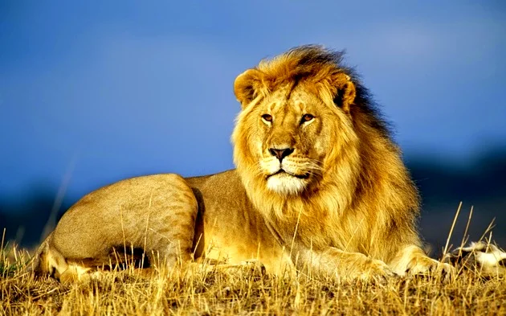
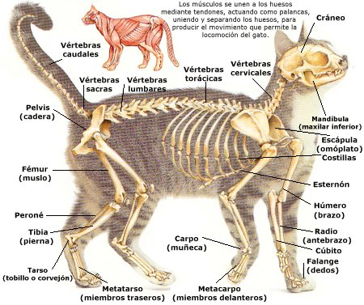

Felinos é como chamamos a família de mamíferos Felidae, que é dividida em duas subfamílias: Pantherinae (abrange os leões,
tigres, onças pintadas, leopardos) e Felinae (abrange as onças pardas, jaguatiricas, linces, guepardos e gatos domésticos).
São nativos de todos os continentes, exceto Antártida e Austrália.
As primeiras evidências fósseis de felinos verdadeiros são de 25 milhões de anos atrás,
no período Oligoceno. Os primeiros felinos eram os dentes-de-sabre, que faziam parte da subfamília extinta Machairodontinae.
DETALHES DOS FELINOS:
Esta família é morfologicamente bem especializada para a caça, sendo ágeis, flexíveis e habilidosos. Muitos deles
são ótimos nadadores e/ou escaladores. Possuem caninos longos e cônicos para introduzir mais fácil em suas
presas, tendo molares especializados para rasgar, cortar e triturar. São digitígrados e suas unhas são retráteis, com
exceção dos guepardos, que possuem garras semi-retráteis, uma adaptação que contribui para que sejam
excelentes corredores. Possuem a língua com papilas salientes que ajudam raspar a carne e retirar dos ossos,
durante a alimentação. Os bigodes são vibrissas, que auxiliam nas informações sensoriais do ar.
Sua pelagem é mais densa em regiões frias, a coloração é variável e encontramos espécies com manchas, rosetas e
listas, beneficiando a camuflagem durante a caçada. É comum o melanismo em muitas espécies. A maioria dos
felídeos possui hábito solitário e noturno e algumas espécies são encontradas com maior atividade crepuscular e no amanhecer.
Felídeos, em geral, têm excelentes visão e audição, com olfato aguçado. Possuem uma dieta basicamente carnívora,
mas chegam a ingerir grama para estimular o vômito de bolas de pelo e algumas espécies podem comer frutas para
auxiliar na ingestão de água. Alguns animais apresentam a característica de carregarem a carcaça e esconderem para comer em outro momento.
REPRODUÇÃO DOS FELINOS:
Geralmente os machos são solitários e têm uma área de vida que cruza com mais de uma fêmea. Usam
vocalização e marcação com cheiro para se comunicarem, tanto as fêmeas para mostrar que estão no
cio, como os machos para delimitarem espaço e cruzar com as fêmeas de sua área. Há disputas entre
machos, para o acasalamento, podendo ser fatal. São poligâmicos e o estro dura de 1 a 3 dias.
A estação reprodutiva acontece na época mais favorável, em que há maior disponibilidade de recursos, dependendo da área.
A gestação dura de 2 a 3 meses, dependendo da espécie e apesar de ser comum o nascimento de 2 a 4 filhotes, uma fêmea
pode ter até 8 filhotes.
Gato doméstico (Felis silvestris catus)
O gato doméstico é um dos felinos mais populares e muito comum como animal de estimação. Possui aproximadamente 250 espécies deste felino de pequeno porte.
Sua alimentação é composta por pequenos animais, especialmente roedores, aves e répteis.
Seu tempo médio de vida é de 15 anos, seu peso varia de acordo com a espécie, podendo chegar a até 7 quilos.
Com hábitos noturnos, os gatos tendem a dormir mais do que outros animais, entre 13 e 14 horas diárias, especialmente como forma de conservar energia.
Seu comportamento independente e preguiçoso é uma de suas principais características, inspirando inclusive personagens de diferentes filmes como Garfield, O Gato de Botas e Gato Félix.
Leão (Panthera leo)

O leão é um felino conhecido por seu comportamento agressivo, dominador e destemido, por isso recebe a fama
de "rei da selva". Seu habitat natural é a África subsaariana e a Ásia, local onde já se encontra em risco de extinção.
Considerado um felino de grande porte, o leão adulto pode atingir entre 1,80 e 2,40 metros e peso que varia de 170 a 190
quilos. Seus pelos podem variar na cor amarelo claro ao marrom escuro e uma juba característica que se desenvolve a partir
com o passar do tempo.
Um leão macho precisa de uma média de 7 quilos de carne por dia, enquanto a fêmea se satisfaz com aproximadamente 5 quilos.
Em alguns períodos a caça pode apresentar um ritmo irregular, fazendo com que muitas vezes o leão fique alguns dias sem alimento,
porém em momento de caça farta, a ingestão de alimentos pode chegar a 30 quilos em uma única vez.
Por apresentar um comportamento agressivo, sua alimentação é feita a partir da caça de outros animais, como zebras, veados,
antílopes e girafas.
LINCE
O lince-ibérico é um animal típico da Península Ibérica e é considerado o felino mais ameaçado de extinção.
Apresenta cabeça menor que o corpo, que por sua vez possui pelos na cor amarelo claro com pequenas manchas pretas espalhadas.
Também possui pelos nas orelhas e uma espécie de colar de pelos, que se assemelha a uma barba.
Medindo entre 85 e 110 centímetros, os linces possuem pernas e caudas curtas, esta por sua vez pode
chegar a 30 centímetros de comprimento. O macho costuma pesar entre 13 e 27 quilos, enquanto a fêmea
tem peso médio de 10 quilos.
Considerada uma espécie solitária, os linces costumam caçar animais como roedores, aves, répteis, anfíbios,
veados e até patos. A caça é realizada aos poucos, pois o lince tende a perseguir sua presa lentamente de forma
que esteja a uma distância pequena para que o ataque seja feito em poucos passos.
Tigre (Panthera tigris)
O tigre é um dos maiores felinos do reino animal. Considerado imponente, com garras fores, unhas e dentes afiados fazem com que
este animal tenha como uma de suas características mais marcantes sua agressividade no momento da caça e defesa.
Seu tamanho pode variar entre 1,40 e 2,60 metros, sem contar a cauda que pode chegar a mais de um metro. Seu peso é de
aproximadamente 200 quilos.
A pelagem dourada e listas pretas distribuídas pelo corpo são únicas, ou seja, é a forma de identificação de cada animal.
Os tigres são animais que raramente são vistos em grupos, pois vivem sozinhos ou com seus filhotes. Em situações de caça,
caso outro tigre apareça, a presa é compartilhada.
Os animais mais caçados pelos tigres são leopardos, tartarugas, crocodilos e até mesmo outros tigres.
São animais típicos da Ásia, especialmente em países como Rússia, China, Malásia, Tailândia, Índia e Vietnã. Três espécies
de tigres foram extintos, sendo: tigre-de-bale-, tigre-de-java e tigre-do-cáspio.
A pantera negra é uma variação da onça-pintada, sendo que a diferença está na cor dos pelos.
A coloração preta é causada pelo gene responsável pela distribuição do pigmento preto na parte interna do pelo, ou seja, representa melanina em excesso.
De acordo com a luminosidade é possível perceber que as manchas características da onça-pintada permanecem na pantera-negra.
Para a caça, ao possuir uma única cor, a camuflagem se torna mais difícil do que possuir cores diferentes.
Onça-pintada (Panthera onca)
A onça-pintada é o felino que pode ser encontrado no Brasil, pois seu habitat engloba o continente americano, fazendo assim
com que este animal seja visto desde o sul dos Estados Unidos até o norte da Argentina, incluindo assim regiões brasileiras como
Pantanal, Amazônia e Cerrado.
Em alguns locais a espécie já está extinta, porém devido a sua ampla distribuição é considerado um animal classificado
como "quase ameaçada".
Sua aparência é marcante, especialmente por conta dos pelos dourados e suas manchas pretas bem definidas, sua cabeça arredondada
e robusta, além das patas grandes.
É um dos felinos de grande porte, pesando entre 56 e 92 quilos e comprimento que varia de 1,10 a 1,85 metros.
É um animal que vive solitário e um predador muito importante na cadeia alimentar, principalmente por não apresentar restrição,
visto que come o que for possível caçar.
ESTRUTURA DE UM FELINO:

O esqueleto dos gatos possui cerca de 244 ossos e é divido em esqueleto axial e apendicular.
O primeiro contém o crânio, mandíbula, esterno, 13 costelas e a coluna vertebral, constituídas
de 7 vértebras cervicais, 13 torácicas, 7 lombares, 3 sacrais e 20 a 24 caudais.